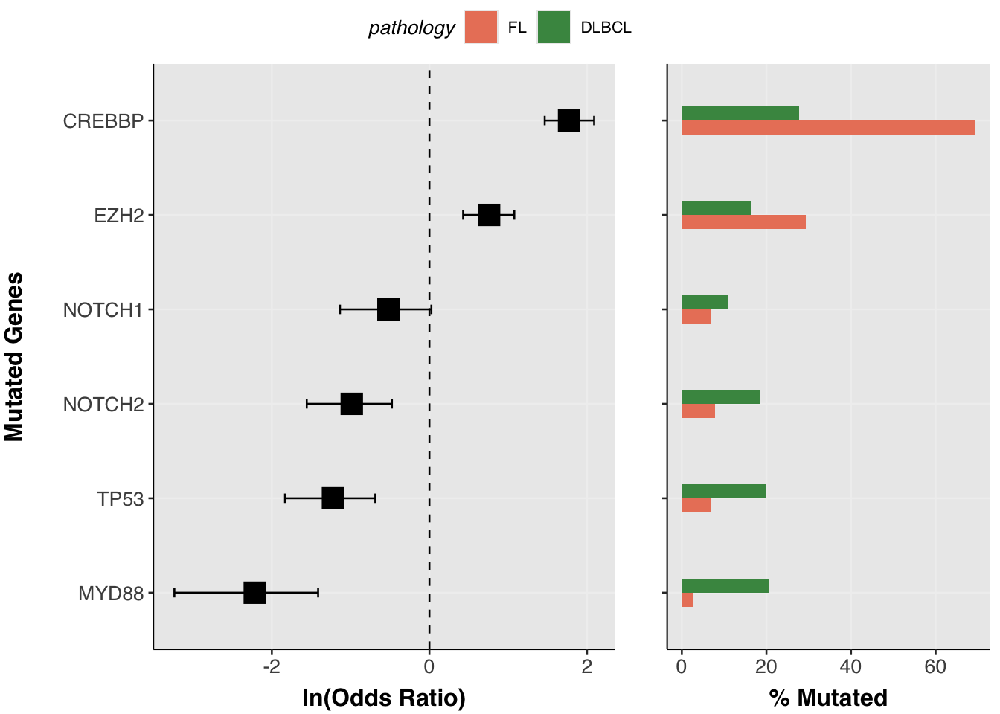
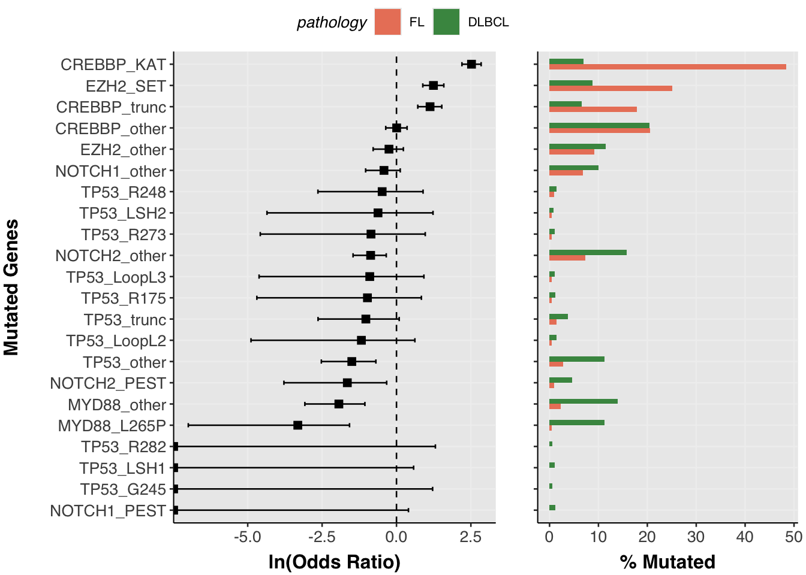
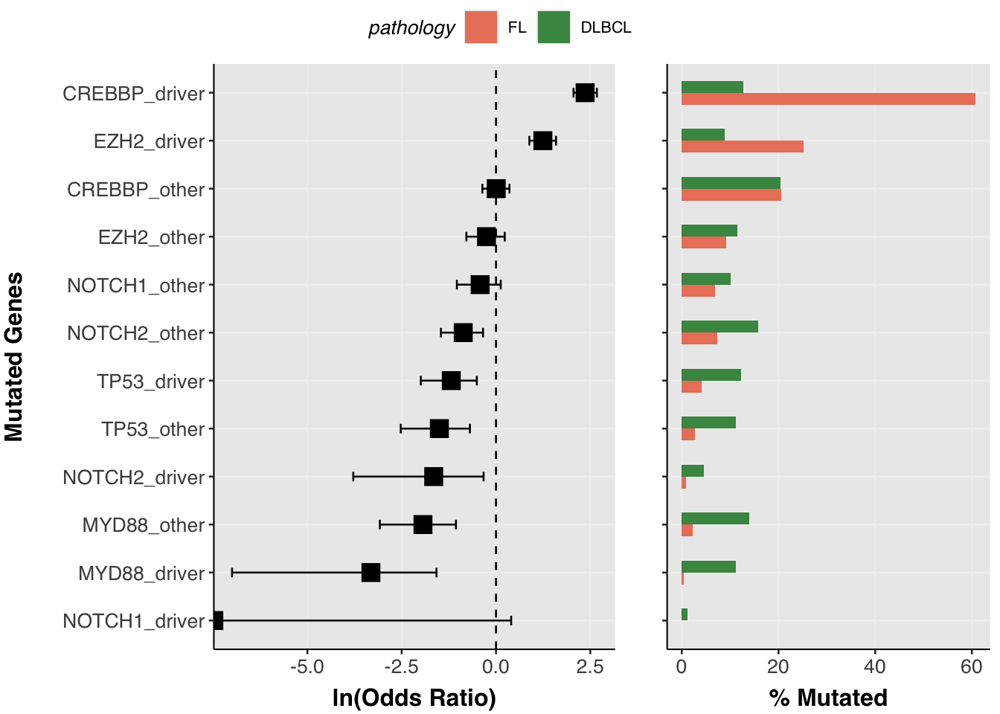
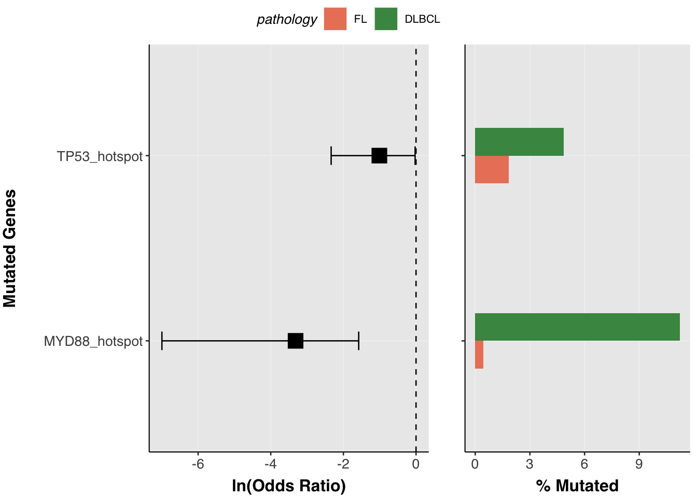
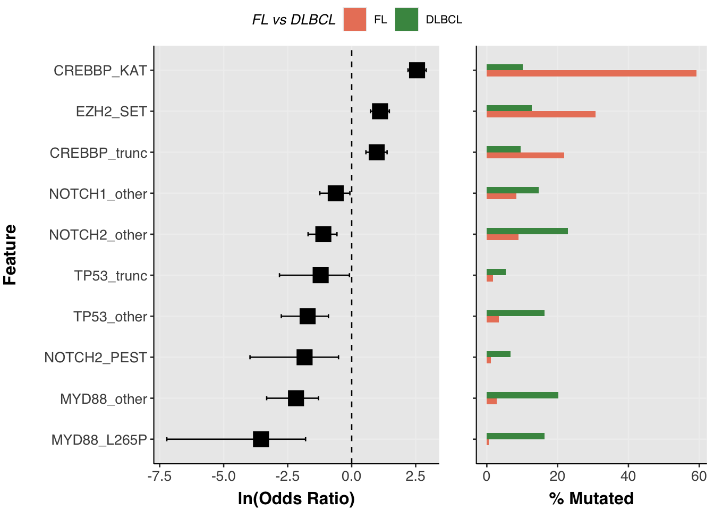
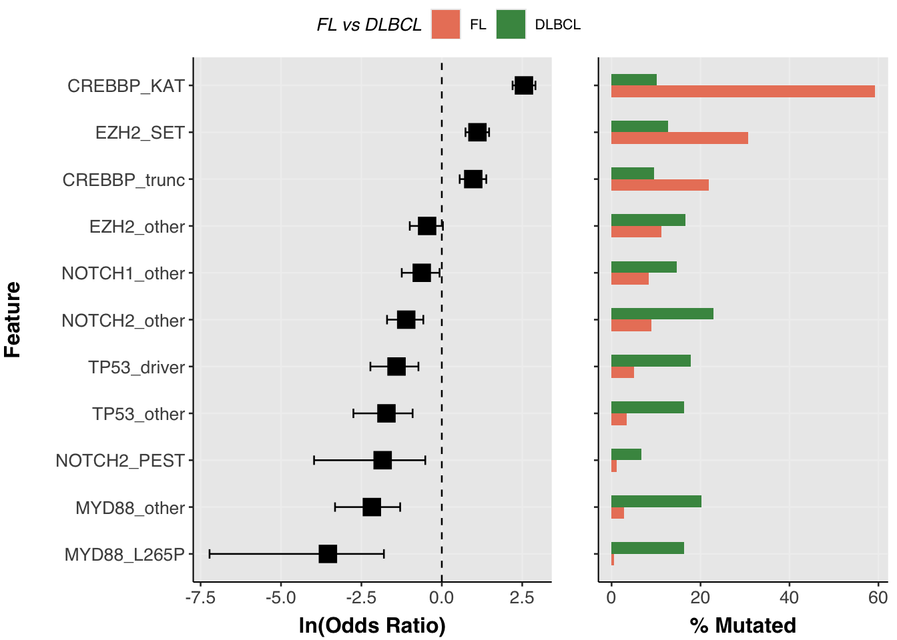

Driver mutations and hot spots
Tutorial: driver mutations and hot spots
In the previous tutorial we assembled a binary feature matrix using assemble_genetic_features(). That approach treats each gene as a single binary feature: a sample is either mutated or not. For many analyses that is exactly what you want — but for some genes the type of mutation matters as much as its presence and you will want to separately handle mutations of different varieties or with certain functional annotations.
Consider TP53: a truncating mutation, a DNA-contact hotspot substitution (e.g. R248W), and a structural-domain mutation (e.g. Loop L3) all hit the same gene but have different biological consequences and could different frequencies across lymphoma subtypes. Similarly, CREBBP KAT domain missense mutations have a function distinct from truncating mutations. The canonical MYD88 hotspot is enriched in a different LymphGen class than other MYD88 missense mutations. What other nuances could we be missing?
This tutorial shows how to use annotate_curated_drivers() from GAMBLR.utils to add sub-gene categories to your MAF, and how to use those categories for visualisation and statistical comparison with the companion functions prettyForestPlot() (GAMBLR.viz), test_feature_associations() (GAMBLR.utils), and plot_feature_associations() (GAMBLR.viz).
Obtain metadata and mutations
We will compare FL and DLBCL samples across a set of recurrently mutated genes.
metadata <- get_gambl_metadata() %>%
filter(pathology %in% c("FL", "DLBCL")) %>%
GAMBLR.helpers::check_and_clean_metadata(duplicate_action = "keep_first")
maf <- get_all_coding_ssm(metadata)Annotate with driver categories
annotate_curated_drivers() appends four new columns to every row of the MAF for the genes you specify:
| Column | What it contains |
|---|---|
hot_spot |
logical; TRUE for curated hotspot mutations |
hotspot_alias |
the specific hotspot name (e.g. EZH2_Y641), NA otherwise |
mutation_alias |
finest-resolution label: named hotspot, structural region, or broad class (e.g. TP53_trunc, TP53_R248) |
driver_alias |
two-category label per gene: <GENE>_driver or <GENE>_other
|
genes <- c("EZH2", "CREBBP", "TP53", "MYD88", "NOTCH1", "NOTCH2")
maf <- annotate_curated_drivers(
maf_data = maf,
genes_of_interest = genes
)Let’s look at what was added for TP53:
maf %>%
filter(Hugo_Symbol == "TP53") %>%
select(Tumor_Sample_Barcode, Variant_Classification,
HGVSp_Short, hot_spot, mutation_alias, hotspot_alias, driver_alias) %>%
head(20)genomic_data Object
Genome Build: grch37
Showing first 10 rows:
Tumor_Sample_Barcode Variant_Classification HGVSp_Short hot_spot
1 DLBCL10456T Missense_Mutation p.R282W TRUE
2 DLBCL10460T Missense_Mutation p.Y126D FALSE
3 DLBCL10462T Nonsense_Mutation p.R196* FALSE
4 DLBCL10466T Missense_Mutation p.V216M FALSE
5 DLBCL10475T Missense_Mutation p.E258D FALSE
6 DLBCL10477T Nonsense_Mutation p.R209* FALSE
7 DLBCL10478T Missense_Mutation p.Y220C FALSE
8 DLBCL10479T Nonsense_Mutation p.Q136* FALSE
9 DLBCL10488T Intron <NA> FALSE
10 DLBCL10490T Missense_Mutation p.P151H FALSE
mutation_alias hotspot_alias driver_alias
1 TP53_R282 TP53_hotspot TP53_driver
2 TP53_LSH1 <NA> TP53_driver
3 TP53_trunc <NA> TP53_driver
4 TP53_other <NA> TP53_other
5 TP53_other <NA> TP53_other
6 TP53_trunc <NA> TP53_driver
7 TP53_other <NA> TP53_other
8 TP53_trunc <NA> TP53_driver
9 TP53_other <NA> TP53_other
10 TP53_other <NA> TP53_otherNotice that hotspot_alias is populated only for the strictest recurrent hotspot codons and is NA for all other rows — including truncating mutations. mutation_alias is more permissive: it labels truncations (TP53_trunc), structural-domain categories, and hotspot codons, leaving very few rows unlabelled. driver_alias collapses everything to just TP53_driver or TP53_other.
And a quick frequency count of the alias categories:
genomic_data Object
Genome Build: grch37
Showing first 10 rows:
mutation_alias n
1 TP53_other 351
2 TP53_trunc 98
3 TP53_R248 43
4 TP53_LoopL2 39
5 TP53_LoopL3 34
6 TP53_R175 33
7 TP53_LSH1 31
8 TP53_R273 30
9 TP53_LSH2 24
10 TP53_G245 16TP53 driver mutations are dominated by truncations (TP53_trunc) alongside a handful of specific structural-domain and hotspot categories. Because hotspot_alias is NA for truncating mutations, genes like TP53 — whose driver biology is dominated by truncations — will have few or no hotspot_alias entries. This distinction matters when choosing how to group features for analysis (see below).
Visualising associations with prettyForestPlot
prettyForestPlot() now accepts a maf_column argument that controls the granularity of the features shown. Compare the three levels:
Hugo_Symbol — one bar per gene (baseline)
prettyForestPlot(
maf = maf,
metadata = metadata,
comparison_column = "pathology",
comparison_values = c("FL", "DLBCL"),
genes = genes,
maf_column = "Hugo_Symbol"
)$arranged
mutation_alias — finest resolution
Each curated region or hotspot codon becomes its own feature, revealing heterogeneity within a gene. Here TP53 splits into truncation, hotspot codon, and structural-loop categories; EZH2_Y641 stands apart from other EZH2 mutations.
prettyForestPlot(
maf = maf,
metadata = metadata,
comparison_column = "pathology",
comparison_values = c("FL", "DLBCL"),
genes = genes,
maf_column = "mutation_alias"
)$arranged
This level of granularity is useful for discovery, but it comes at a cost: splitting mutations into many fine-grained categories means each category is supported by fewer samples. Rare categories may not be testable at all, and the multiple-testing burden grows with the number of features. If your goal is to ask whether a gene is differentially mutated between groups — rather than which specific mutation class drives the difference — a coarser grouping is usually more powerful and easier to interpret. The next two levels of maf_column offer that tradeoff.
driver_alias — binary driver classification
Collapses to just two categories per gene (<GENE>_driver vs <GENE>_other), useful when you only want to distinguish curated driver events from background mutations without further sub-classification.
prettyForestPlot(
maf = maf,
metadata = metadata,
comparison_column = "pathology",
comparison_values = c("FL", "DLBCL"),
genes = genes,
maf_column = "driver_alias"
)$arranged
hotspot_alias — strictly recurrent hotspot codons only
Only the most recurrent named hotspot codons appear here. Truncating mutations and broad LOF regions do not generate a hotspot_alias entry. For TP53, whose driver biology is dominated by truncations, very few rows appear — the per-gene fallback mechanism in test_feature_associations() below handles this case automatically.
prettyForestPlot(
maf = maf,
metadata = metadata,
comparison_column = "pathology",
comparison_values = c("FL", "DLBCL"),
genes = genes,
maf_column = "hotspot_alias"
)$arranged
Statistical testing with test_feature_associations
prettyForestPlot() computes statistics internally but does not expose them. test_feature_associations() performs the same per-feature Fisher’s exact test and returns a tidy tibble you can inspect, filter, or feed directly into plot_feature_associations().
results <- test_feature_associations(
maf = maf,
metadata = metadata,
comparison_column = "pathology",
comparison_values = c("FL", "DLBCL"),
genes = genes,
maf_column = "mutation_alias"
)
results %>% arrange(q_value)# A tibble: 22 × 13
gene feature used_fallback OR conf_low conf_high p_value n_mutated
<chr> <chr> <lgl> <dbl> <dbl> <dbl> <dbl> <int>
1 CREBBP CREBBP_KAT FALSE 12.8 9.03 18.4 1.15e-48 263
2 MYD88 MYD88_L26… FALSE 0.0290 0.000730 0.165 5.87e-12 253
3 MYD88 MYD88_oth… FALSE 0.114 0.0361 0.274 4.25e-11 318
4 EZH2 EZH2_SET FALSE 3.03 2.09 4.35 4.57e- 9 253
5 TP53 TP53_other FALSE 0.179 0.0640 0.403 2.14e- 7 258
6 CREBBP CREBBP_tr… FALSE 2.66 1.74 3.99 4.91e- 6 186
7 NOTCH2 NOTCH2_ot… FALSE 0.331 0.182 0.563 4.81e- 6 371
8 NOTCH2 NOTCH2_PE… FALSE 0.159 0.0188 0.598 1.36e- 3 105
9 NOTCH1 NOTCH1_ot… FALSE 0.536 0.288 0.932 2.24e- 2 241
10 TP53 TP53_trunc FALSE 0.298 0.0595 0.916 2.86e- 2 87
# ℹ 12 more rows
# ℹ 5 more variables: n_mutated_FL <int>, n_total_FL <int>,
# n_mutated_DLBCL <int>, n_total_DLBCL <int>, q_value <dbl>The output contains odds ratios, confidence intervals, p-values, and Benjamini–Hochberg-adjusted q-values. The n_mutated_<group> and n_total_<group> columns carry per-group counts and effective denominators (only samples present in both the MAF and the metadata by default; set restrict_to_maf = FALSE to include all metadata samples).
Plotting test results with plot_feature_associations
The results tibble feeds directly into plot_feature_associations(). Group sizes are carried in the n_total_* columns so no additional arguments are needed for the bar plot.
plots <- plot_feature_associations(
results = results,
max_q = 0.1,
comparison_name = "FL vs DLBCL"
)
plots$arranged
You can filter to the most significant features and inspect the underlying data before plotting:
plots$results %>%
select(gene, feature, OR, conf_low, conf_high, q_value,
starts_with("n_mutated_"), starts_with("n_total_"))# A tibble: 10 × 10
gene feature OR conf_low conf_high q_value n_mutated_FL
<chr> <fct> <dbl> <dbl> <dbl> <dbl> <int>
1 EZH2 EZH2_SET 3.03 2.09 4.35 2.51e- 8 55
2 CREBBP CREBBP_KAT 12.8 9.03 18.4 2.52e-47 106
3 CREBBP CREBBP_trunc 2.66 1.74 3.99 1.54e- 5 39
4 TP53 TP53_trunc 0.298 0.0595 0.916 6.30e- 2 3
5 TP53 TP53_other 0.179 0.0640 0.403 9.40e- 7 6
6 MYD88 MYD88_L265P 0.0290 0.000730 0.165 6.46e-11 1
7 MYD88 MYD88_other 0.114 0.0361 0.274 3.12e-10 5
8 NOTCH1 NOTCH1_other 0.536 0.288 0.932 5.46e- 2 15
9 NOTCH2 NOTCH2_PEST 0.159 0.0188 0.598 3.74e- 3 2
10 NOTCH2 NOTCH2_other 0.331 0.182 0.563 1.54e- 5 16
# ℹ 3 more variables: n_mutated_DLBCL <int>, n_total_FL <int>,
# n_total_DLBCL <int>Advanced: controlling per-gene feature resolution
The examples above apply the same maf_column uniformly across all genes. The two subsections below show how to handle genes that don’t fit neatly into a single resolution level.
Per-gene fallback for sparse features
Some genes have no testable hotspot_alias entries (e.g. TP53, which is mutated mainly through truncations that don’t receive a hotspot alias). The fallback_column parameter handles this gracefully: when a gene has no features meeting min_samples under maf_column, it retests that gene using fallback_column instead.
results_fb <- test_feature_associations(
maf = maf,
metadata = metadata,
comparison_column = "pathology",
comparison_values = c("FL", "DLBCL"),
genes = genes,
maf_column = "hotspot_alias",
fallback_column = "mutation_alias",
verbose = TRUE
)
# which genes used the fallback?
results_fb %>% filter(used_fallback)# A tibble: 9 × 13
gene feature used_fallback OR conf_low conf_high p_value n_mutated
<chr> <chr> <lgl> <dbl> <dbl> <dbl> <dbl> <int>
1 EZH2 EZH2_other TRUE 0.633 0.369 1.03 6.71e- 2 277
2 EZH2 EZH2_SET TRUE 3.03 2.09 4.35 4.57e- 9 253
3 CREBBP CREBBP_KAT TRUE 12.8 9.03 18.4 1.15e-48 263
4 CREBBP CREBBP_other TRUE 0.798 0.547 1.15 2.25e- 1 504
5 CREBBP CREBBP_trunc TRUE 2.66 1.74 3.99 4.91e- 6 186
6 NOTCH1 NOTCH1_other TRUE 0.536 0.288 0.932 2.24e- 2 241
7 NOTCH1 NOTCH1_PEST TRUE 0 0 1.26 1.04e- 1 27
8 NOTCH2 NOTCH2_PEST TRUE 0.159 0.0188 0.598 1.36e- 3 105
9 NOTCH2 NOTCH2_other TRUE 0.331 0.182 0.563 4.81e- 6 371
# ℹ 5 more variables: n_mutated_FL <int>, n_total_FL <int>,
# n_mutated_DLBCL <int>, n_total_DLBCL <int>, q_value <dbl>Manually controlling which genes use fine-grained features
The automatic fallback triggers when a gene has no testable entries under maf_column. But you may want to force the fallback for a specific gene regardless — for example, you may decide that TP53’s truncation-dominated mutation spectrum is not meaningfully split by mutation_alias in your cohort and you’d prefer it to be represented by driver_alias categories instead, while keeping the fine-grained mutation_alias resolution for all other genes.
The simplest way to achieve this is to set mutation_alias to NA for the genes you want to exempt before calling test_feature_associations(). The fallback mechanism will then take over for those genes automatically.
maf_custom <- maf %>%
mutate(mutation_alias = ifelse(Hugo_Symbol == "TP53", NA, mutation_alias))
results_custom <- test_feature_associations(
maf = maf_custom,
metadata = metadata,
comparison_column = "pathology",
comparison_values = c("FL", "DLBCL"),
genes = genes,
maf_column = "mutation_alias",
fallback_column = "driver_alias",
verbose = TRUE
)
# confirm TP53 fell back and others did not
results_custom %>%
distinct(gene, used_fallback) %>%
arrange(gene)# A tibble: 6 × 2
gene used_fallback
<chr> <lgl>
1 CREBBP FALSE
2 EZH2 FALSE
3 MYD88 FALSE
4 NOTCH1 FALSE
5 NOTCH2 FALSE
6 TP53 TRUE
plot_feature_associations(
results = results_custom,
max_q = 0.1,
comparison_name = "FL vs DLBCL"
)$arranged
This pattern generalises to any set of genes: just NA out mutation_alias (or whichever maf_column you are using) for the genes you want treated more coarsely, and let fallback_column handle them.
Happy GAMBLing!
/$$$$$$ /$$$$$$ /$$ /$$ /$$$$$$$ /$$ .:::::::
/$$__ $$ /$$__ $$ | $$$ /$$$ | $$__ $$ | $$ .:: .::
| $$ \__/ | $$ \ $$ | $$$$ /$$$$ | $$ \ $$ | $$ .:: .::
| $$ /$$$$ | $$$$$$$$ | $$ $$/$$ $$ | $$$$$$$ | $$ <- .: .::
| $$|_ $$ | $$__ $$ | $$ $$$| $$ | $$__ $$ | $$ .:: .::
| $$ \ $$ | $$ | $$ | $$\ $ | $$ | $$ \ $$ | $$ .:: .::
| $$$$$$/ | $$ | $$ | $$ \/ | $$ | $$$$$$$/ | $$$$$$$$ .:: .::
\______/ |__/ |__/ |__/ |__/ |_______/ |________/
~GENOMIC~~~~~~~~~~~~~OF~~~~~~~~~~~~~~~~~B-CELL~~~~~~~~~~~~~~~~~~IN~~~~~~
~~~~~~~~~~~~ANALYSIS~~~~~~MATURE~~~~~~~~~~~~~~~~~~~LYMPHOMAS~~~~~~~~~~R~